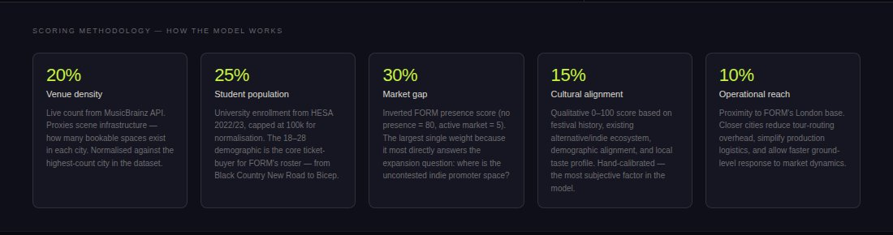

Where should an independent promoter expand next?
A single-page map dashboard that scores 21 UK cities for an indie and alternative live-music promoter, combining venue data, student population, market gap, cultural fit and distance from London into one ranked view.
Problem
An independent promoter with a strong London base has more options for a second city than it can research properly. Which cities have the venues, the audience and the room in the market to support an indie and alternative programme, and how far are they from the existing operation?
The aim was a tool that put the whole shortlist on one screen and made the trade-offs visible without opening a spreadsheet.
Skills
- Scoring model: five weighted factors, venue density 20%, student population 25%, market gap 30%, cultural fit 15%, distance from London 10%
- Live data: venue counts pulled from the MusicBrainz API on page load
- Open data: student population from HESA 2022/23
- Front end: one
index.htmlof roughly 600 lines, plain JavaScript with Leaflet for the map - Narrative: per-city deep-dive covering venues, comparable artists and risks
Results
The weighting
The value is less in any single ranking than in making the weighting explicit and showing where a judgement call is doing the work.
